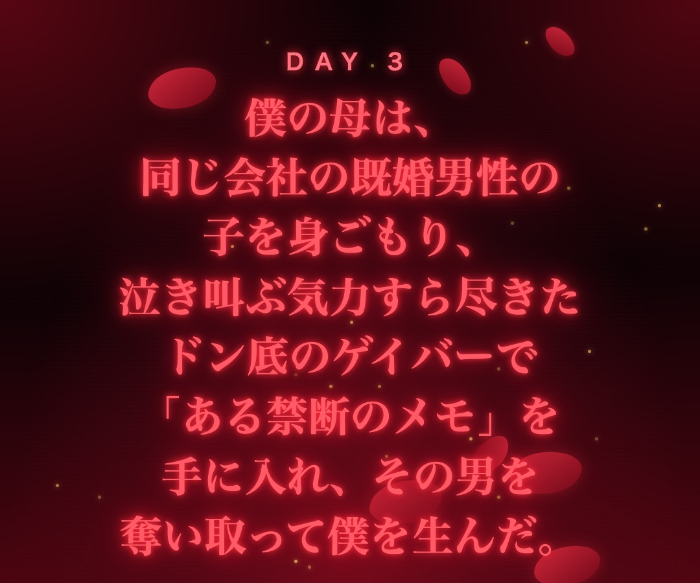

これまでの2日間で、
僕はあなたに
「世間の常識という嘘」と
「あなたの心を殺す
周りの雑音の正体」について
お話ししてきました。
「もう、周りの
『無理だよ』という声に
怯えるのはやめよう」
「私の本心を
諦めなくていいんだ」
少しずつ、あなたの心の中に
小さな光が灯り始めているかも
しれません。
だけど同時に、心の奥底では、
まだこんな冷めた声も
聞こえているはずです。
「そうは言っても、
それはメンタルが強くて
行動力がある
一部の特別な人の話でしょ？」
「私はもう彼と
大喧嘩をしてしまったし、
自分一人で現実を動かす力なんて
ない……」
「これ以上、
我慢したり努力したり
する気力なんて、
もう一ミリも
残っていないよ……」
その気持ち、痛いほど分かります。
今すでに心がすり減って
限界を迎えているのに、
「自分で頑張って現実を変えよう」
なんて
言われたら、
余計に絶望してしまいますよね。
だからこそ、今日、
僕はこれまで決して
公には深く語らなかった
「僕自身の出生の真実」を
すべてお話しします。
実は、僕の母も、
自分の力では何一つ
変えることができない、
ただの無力でボロボロな女性でした。
そんな母の人生を
一瞬でひっくり返したのは、
母自身の努力ではなく、
ドン底の夜に
ゲイバーで手に入れた
「ある魔法のようなアイテム」
だったのです。
これは、僕が大きくなってから、
母自身の
口から直接聞かされた話です。
今から数十年前のこと。
当時、34歳だった僕の母は、
同じ会社の別部署にいた既婚男性
（後の僕の父）と恋に落ちました。
相手にはすでに家庭があり、
妻がいました。
おまけに同じ職場。
もし関係がバレれば、
社内での居場所も、
これまで積み上げてきたキャリアも
一瞬で吹き飛ぶ、
絶対に許されない関係です。
そしてある日、
母のお腹の中に、
新しい命が宿りました。
――それが、
今この文章を書いている「僕」です。
母はもともと、
決して強い人間では
ありませんでした。
厳格すぎる父親のもとで育ち、
幼い頃から
「お前はダメな人間だ」
「ろくでなしだ」と否定され、
時には手を上げられるような
家庭環境でした。
そのせいで自己肯定感が極端に低く、
30代になるまで
まともな恋愛経験すら
ほとんどなかったといいます。
「34歳という年齢の焦り」と
「職場が同じという
逃げ場のなさ」。
妊娠が分かった瞬間、
母を襲ったのは喜びではなく、
底なしの恐怖でした。
勇気を
出して打ち明けた友人たちからは、
「正気なの？
同じ会社だよ？」
「絶対に認知なんて
してくれない」
「奥さんにバレたら
何百万も慰謝料を請求されて、
会社もクビになって、
シングルマザーで
惨めに生きるのがオチだよ」
と冷たく突き放されました。
親族からも猛反対され、
「恥さらしだ」
と責め立てられる毎日。
四方八方から飛んでくる
「無理だ」
「お前には幸せになる
資格なんてない」
という呪いのような言葉。
母は、今この記事を読んでいる
あなたよりも、
ずっとボロボロで、
何の力も持たない
絶望的な状況にいました。
妊娠を知った当初、
相手の男性（父）も激しく動揺し、
完全に保身に走りました。
「妻がいる」
「会社の立場がある」
「今の生活を
壊すわけにはいかない」
既婚男性なら誰もが口にする、
あの定番の言い訳と恐怖です。
当時の母には、
冷静に話し合う力も、
現実的な手続きを進める気力も、
何一つありませんでした。
不安と恐怖に押し潰された母は、
毎日泣き叫び、
深夜に何十件も
長文のLINEを送りつけ、
彼と怒鳴り合いの大喧嘩を
何度も繰り返したのです。
完全なヒステリー状態でした。
「なんで私ばっかり
こんな目に遭うの！」
「責任取ってよ！」
と感情をぶつけ、
「もう話し合いにならない」
「お前とは無理だ」
と突き放される。
さらに、奥さん側にも
関係が匂い始め、
莫大な慰謝料を
請求されるかもしれない
という恐怖が現実味を
帯びてきました。
職場でも白い目で見られ始め、
誰にも頼れず、
お金も未来もすべてを
失いかけた夜――。
母は、本当に自ら命を絶とうと、
夜の街をフラフラと
彷徨っていました。
「もう、
死んでお詫びを
するしかない……」
そう思い詰めていた時、
昼間の世間体から隔絶された
路地裏で、
一軒のゲイバーの明かりに
吸い寄せられるように
入ったそうです。
そこで母は、偶然隣に座った
「かつて全く同じように
既婚男性との子供を身ごもり、
修羅場の末に
認知も再婚も勝ち取った
姉御肌の女性」と出会い、
意気投合しました。
泣き崩れながらすべてを
打ち明ける母に、
その女性は笑いながら
こう言ったといいます。
「あんた、
なんで自分で考えて
自爆してんだよ。
男ってのはね、
感情でぶつかると逃げるけど、
ある『スイッチ』を押されると、
自分が壊れてでも
守りたくなる生き物なんだよ。
これ持っていきな。
あたしが修羅場をくぐり抜けて
叩き込んだ、
裏のルールが書いてあるから」
そう言って彼女が母に手渡したのが、
男の本能を狂わせ、
保身を捨てさせるための
「禁断の秘策」が書き込まれた
一冊のメモ帳――
まさに、母にとっての
魔法のアイテムでした。
正直、当時の母には、
もう自分で何かを考えたり、
努力したりするエネルギーは
一ミリも残っていませんでした。
だからこそ、母は
自分の頭で頑張るのを完全にやめ、
ゲイバーの女性からもらった
メモに書かれていた「あること」を
そのままやってみた
だけだったといいます。
感情的に責めるのをやめ、
メモに書かれた「ある一言」を
そのまま送った。
あとは母自身が頑張るのではなく、
メモに書かれた「あること」だけを
淡々とこなした。
本当に、それだけでした。
難しい駆け引きも、
歯を食いしばるような努力も
していません。
すると、少しずつ
状況が動き始めました。
まず父が、
離婚に向けて動けるかどうかを
探るために
弁護士に依頼してみたのです。
そしてその結果、
算定表で計算してみるように
言われて調べたり、
現実的な別居先を探したりしながら、
周囲との板挟みや慰謝料の現実とも
向き合い、
少しずつ状況を整理していきました。
そうやって現実を
一つずつ動かしていく中で、
父の心境にも変化が生まれ、
やがてこう口に
するようになったのです。
「俺がこの命を守らなきゃ」
かつては保身に走っていた男が、
気づけば自ら腹を括り、
奥さんとの離婚や慰謝料の問題も
片づけ、
僕を認知し、
母と再婚するまでに至ったのです。
母がすごい努力を
したからではありません。
「魔法のメモ」に書かれたあることを
そのままやっただけで、
泥沼の現実は音を立てて
ひっくり返りました。
「私はもう彼と
大喧嘩をしてしまったからダメ」
「感情的になって
重い女だと思われたから手遅れ」
「私には自分で
現実を変える力も、
頑張る気力も残っていない」
もしあなたが今、
そんな風に絶望しているなら、
安心してください。
僕の母も、自分の力では
1ミリも変えられない
無力でボロボロな女性でした。
母と、今のあなたの違いは
たった一つ。
母は、ドン底の夜にゲイバーで
「男の心理を強制的に
書き換えるアイテム
（禁断のメモ）」を手に入れた。
ただ、それだけなのです。
あなたに、強いメンタルも、
特別な交渉術も、
歯を食いしばる努力も
一切必要ありません。
丸腰で戦うのをやめて、
母が手に入れたのと同じ
「武器」を手に取るだけで
いいのです。
母の人生を180度ひっくり返した
その「禁断のメモ
（裏のロジック）」は、
今、母から直接受け継いだ
僕の手の中にあります。
明日の配信では、
この母が手に入れた
「魔法のロジック」の正体と、
「今まさにあなたが
置かれている現状」を
完全に重ね合わせます。
なぜ、丸腰のまま
一人で頑張ろうとすると、
あなたは99%の確率で
「慰謝料を払わされて
捨てられる側」になってしまうのか。
そして、母が使ったその
「禁断のメモ」の中身を
あなたが手にした瞬間、
どうやって彼の心が
勝手に書き換わり、
「認知も、愛も、未来もすべて
手に入れる側」へと
逆転していくのか。
あなたの現実が、
音を立てて変わり始める
「認知の真実」の話をします。
明日も、絶対に
一文字も逃さず読んでください。
あなたの人生の逆転劇は、
もう始まっています。
そして、あの日の修羅場が
嘘だったかのように、
今も母は幸せに生きています。
そして、
その母から生まれてきた僕自身も、
こうして今、幸せに生きています。
だから、あなたも大丈夫。
このままで、ちゃんと
幸せな未来へ歩いていけます。
母の話を読んだあと、
今のあなたの気持ちを
聞かせてください。
書いてくれた言葉には、
僕が目を通します。
明日の予告
明日は、母の話から、
あなた自身の話に戻ります。
「待っていれば、いつかは」
と思ったことがあるなら、
次のブログを読みに来てください。